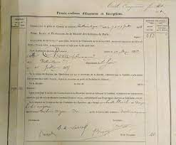

Emma Chenu est née le 26 juillet 1835 à Belleville en France et elle est décédée le 10 octobre 1912 à Beauvoir en France.
Emma chenu obtient son brevet supérieur de lʼenseignement primaire en 1855 à Paris.
Le 19 avril 1863, elle est la deuxième française à réussir le baccalauréat.
Elle passe le diplôme en spécialité sciences mathématiques auprès de la faculté des sciences de Paris, une première dans cette université.
En 1868, elle devient la première française à obtenir une licence en mathématiques à la faculté de Paris.
Son diplôme :
Ce document représente sa licence en mathématiques avec sa signature.
La revanche des femmes dans le monde :
Cette photo nous montre deux femmes scientifiques de l'époque :
Les universités européennes permettent alors aux femmes de suivre les cours, situation qui sʼexplique par les transformations que connaît alors
le système éducatif européen, en particulier dans lʼenseignement secondaire devenu accessible à un grand nombre de jeunes filles.
En France, la première étudiante, Mary Putnam, est officiellement inscrite en 1868.
Les femmes sont très peu nombreuses à lʼuniversité.
Lʼévolution est ensuite très différente selon les pays.
Elle peut être continue comme en France, de 3 % de femmes dans les effectifs étudiants en 1900,
à 10 % à la veille de la Première Guerre mondiale, 20 % en 1925 et 30 % à la veille de la Seconde Guerre mondiale.
Enseignante Emma Chenu, donne des cours préparatoire aux examens de lʼenseignement primaire, 1856 à 1875 à Paris, et est correctrice à la Sorbonne
des cours de lʼassociation de lʼenseignement de jeune filles.
En août 1881, alors enseignante dans un établissement secondaire de Seine-et-Marne. Elle demande en un emploi de professeur
à lʼécole normale supérieure de jeune fille qui vient dʼêtre créé.
Emma Chenu publie plusieurs ouvrages pédagogiques et recueils de sujet dʼexamen. Elle collabore, en 1888 et 1889,
à lʼéphémère Revue scientifique des femmes, fondée par Céline Renooz.
Leur revue a été publié pour partager des recherches
et découvertes importantes dans le domaine scientifique.
La revue veut mettre en lumière des études et des avancées scientifiques importantes apportées par des femmes scientifiques .
Ceci montre lʼimportance de mettre en avant les contributions des femmes dans le domaine scientifique.
Dates importantes :
Naissance : 26 juillet 1835 Première femme a avoir une licence : juillet 1868 Donne des cours préparatoires aux examens de l'enseignement primaire, élementaire et supérieur : 1856 à 1875 à Paris Décès : 10 octobre 1912 à l'âge de 77 ans
Dans cette vidéo, on nous parle des étapes de sa vie rencontrées mais aussi de
ses diplômes obtenus.
Comme par exemple en 1912 elle obtient son brevet supérieur de l'enseignement primaire
et ce diplôme à l'époque était le plus haut accesssible.
Mais elle est aussi la première femme à avoir obtenu une licence en sciences et en
mathématiques à la faculté de Paris.
De plus, cette vidéo évoque la création des lycées crées pour les jeunes filles.
Enfin, la vidéo nous explique son métier exercé en tant qu'enseignante.